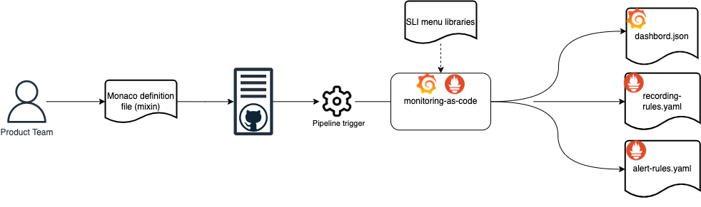

Get started
You start to implement the SRE Monitoring-as-Code framework in your environment by defining and implementing the SLIs and SLOs for your service.
You can then:
- get MaC up and running on your local environment
- distribute the MaC framework in your environment
Define and implement your SLIs and SLOs
Before you can implement the SRE Monitoring-as-Code framework in your environment you must:
- Define user journeys and service-level indicators for your service.
- Agree baseline SLOs for each SLI.
- Implement SLI Definitions.
- Observe and iterate.
Define user journeys and service-level indicators for your service
Setting SLIs helps you set realistic objectives for your service and avoid over-committing resources on Site Reliability Engineering (SRE). SLIs benefit your service by:
- defining Service Level Objectives (SLO) for your service’s user journeys
- helping prioritise your work and improve your infrastructure
- creating metrics to help classify incidents
- measuring how your system performs in the medium to long term
You should run an SLI workshop to define the specific SLIs for your service. Follow the steps in The GDS Way to run an SLI workshop
Agree baseline SLOs for each SLI
Current performance based on SLIs is usually a good place to start, especially if you do not have any other information. It also helps to set a baseline that you can improve to reflect service objectives.
Once you have everything in place, you can (implement your SLIs and SLOs)[#implement-slis-task-heading]
Implement SLI Definitions (sre-monitoring-as-code)

Teams must create a definition file (mixin) for each product they wish to monitor. A boiler plate mixin is provided in the sre-monitoring-as-code repository.
Within the definition file you need to pass in the following global variables for your service: -
| Global variables | Description | Formatting Best Practice | Example |
|---|---|---|---|
| product | Short Product Name | Lower case or hypenated | grapi |
| technow_technical_service | ServiceNow Primary Impacted Service Name | Must match the Service Now Primary Impacted Service | Great Respect API |
| technow_resolver_group | ServiceNow Assignment Group | This is the ServiceNow Assignment Group who are the accountable owner of the Technical Service in question. | Great Respect API |
| configuration_item | ServiceNow Technical Service Subcomponent name | Must match the ServiceNow Technical service subcomponent name | Great Respect API (App Svc) |
| environment | Environment being provisioned | Must be set to a single word | prp1 |
| max_alert_severity | Severity of the event. | ServiceNow values for severity range from 1 – Critical to 5 – OK, with the severity of 0 – Clear. | 3 |
Once setting global variables you will then need to break down each user journey into a different yaml stanza. See "writeback" example below.
local slo_spec = {
# user journey name
writeback: {
# sli per critical user journey step
SLI01: {
title: 'requests to GRAPI writeback case api are successful',
metric_description: 'All requests to GRAPI writeback',
period: '7d',
metric: 'http_server_requests_seconds_count',
metric_target: 0.1,
eval_interval: '1m',
selectors: [config.host, 'job=~"grapi"'],
errorSelectors: ['status=~"4..|5.."'],
slo_target: 0.1,
type: 'http-errors',
},
SLI02: {
title: 'requests to GRAPI writeback are fast enough',
metric_description: 'All requests to GRAPI writeback',
period: '7d',
metric: 'http_server_requests_seconds',
metric_target: 0.75,
latency_percentile: 0.95,
eval_interval: '1m',
selectors: [config.host, 'job=~"grapi"'],
slo_target: 0.1,
type: 'http-latency',
},
},
};
Local variables should be supplied for each SLI as follows: -
| Local variables | Description | Formatting Best Practice | Example |
|---|---|---|---|
| title | Meaningful SLI summary | This is propagated into Dashboards and Alerts and should describe the element of the user journey | Landing page requests |
| metric_description | Meaningful metric description | This is propagated into Dashboards and Alerts and should describe the metric used for calculations | HTTP actuator requests |
| period | The rolling period of which the SLI will cover | Default should be 30 days | 30d |
| metric | The metric to be used to calculate the SLI | This should match the metric exposed and captured by Prometheus | http_server_requests_seconds_count |
| metric_target | For latency based SLIs this should be the target you are aiming to achieve | 0.75 represents 750 milliseconds | 0.75 |
| latency_percentile | For "latency-type" SLIs we measure percentiles inorder to meaningfully describe the distribution of latencies. | The 99 percentile, is defined as the value that 99 out of 100 samples fall below. Thus 99 users out of 100, observe a latency less than this value, and 1 in every 100 observe a latency equal to or greater. We choose the 99%tile, because it represents the tail of the latency distribution (that is the worst cases) | 99 |
| eval_interval | How frequently Prometheus will evaluate rules | Evaluation interval should be greater or equal to Prometheus scrape interval | 1m |
| selectors | This refers to the Label selectors which are used in the Promql expressions to filter data samples | Minimum needs to include the job to filter | 'job=~"grapi", uri=~"/grapi/v1/case"' |
| slo_target | Your statement of desired performance. | Currently set to the inverse so 0.01 represents 99% | 0.01 |
| type | This is the SLI category based on the SLI menu | Must match SLI type provided in SLI Menu | http-errors |
Observe and iterate (sre-monitoring-as-code)
After implementing your SLI configuration, observe the dashboard journeys over a period of time (for example 1 sprint). After this time, iterate your SLIs to better understand your service’s performance and how the SLIs help your team make decisions.